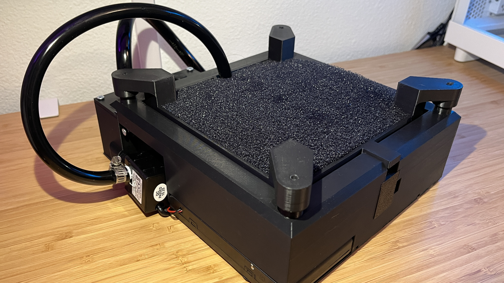
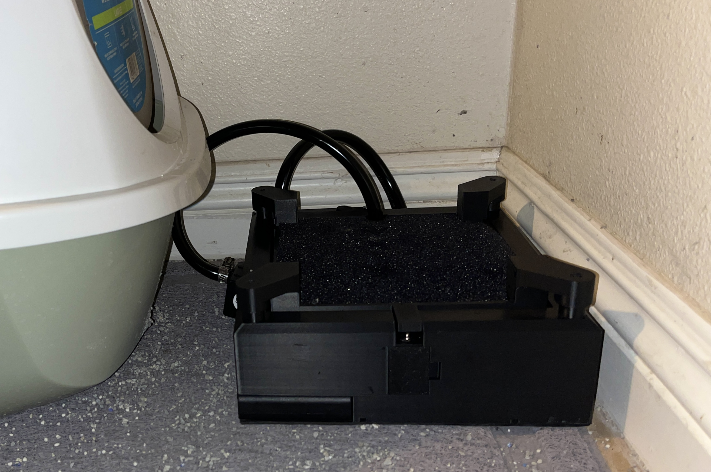
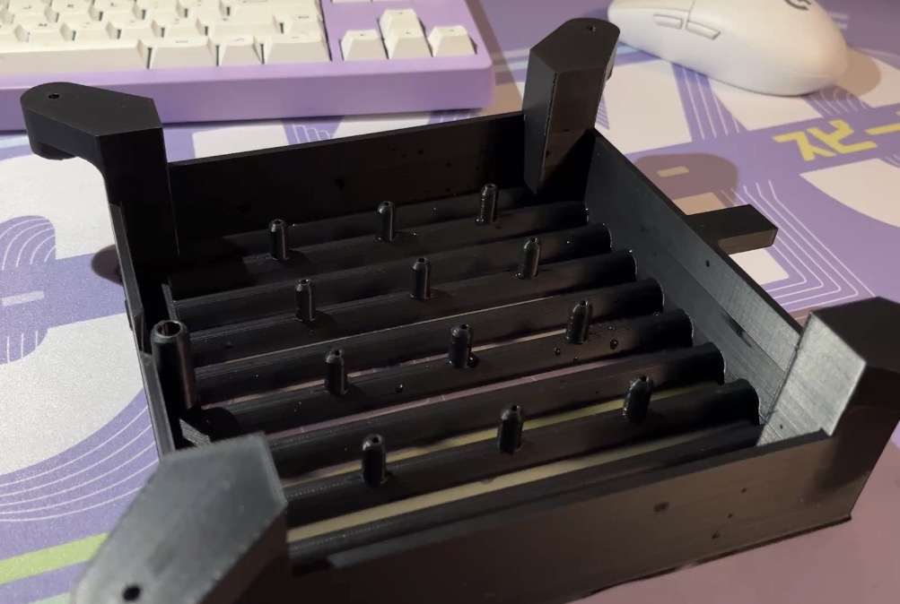
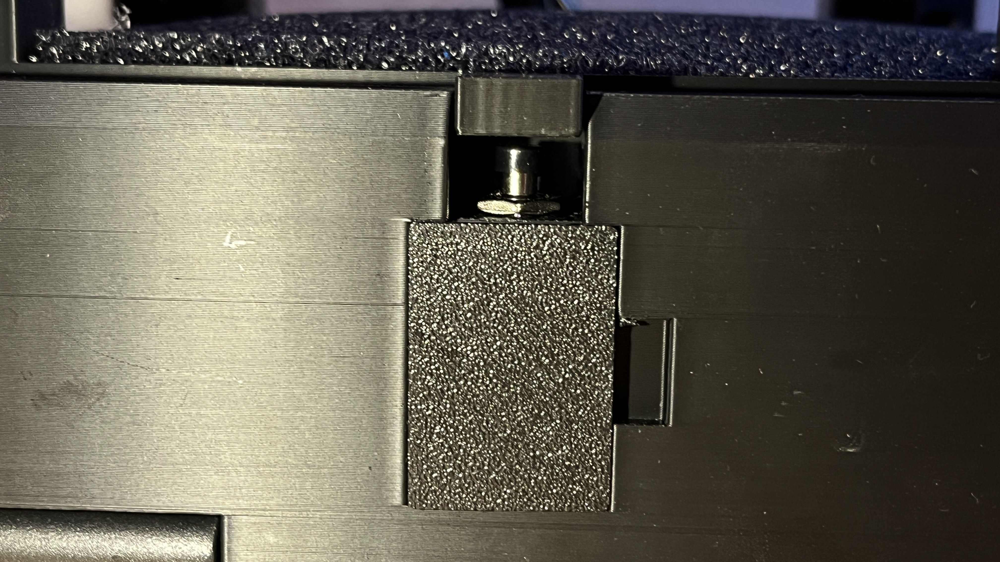
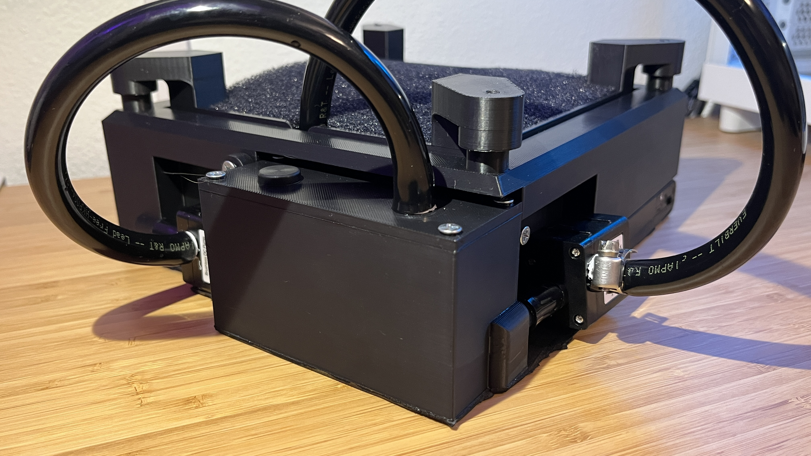

Automated Cat Paw Cleaning Pad
Two years ago my roommate and I found a stray kitten in a dumpster outside a Jollibee restaurant in West Covina. Of course, we took him home and named him Jollibee. The only issues was that every time he used the litterbox, his paws would collect the litter and track it all around the room. Because he has particularly long hair around his paws, regular litter pads wouldn’t work to knock off the litter. My roommates resigned themselves to sweeping the floor two or three times each day. But as an engineering student, I saw this as an opportunity to use what I learned in school and engage in the engineering process.

Specifications
- Water flow must be dynamic enough to effectively clean the cats paws but not too dynamic that it scares the cat away
- Main structure must not exceed 5 inches in height
- The width of the main structure must not exceed 12 inches (width of the litterbox)
-
The device must operate if and only if stepped upon by the cat
- The device must be able to detect the cat
- The device must operate only upon this detection
- All parts must be readily available or 3D printable
- All materials/parts must be water resistant or properly protected from the flowing water
- All water must be adequately contained within the device to avoid leaks and evaporation to reduce frequency of refilling
- The batteries must be accessible and easy to replace
Design Evolution and Overview
The initial concept was to have the spongy pad be inserted into a tray with an inlet tube and multiple upward-facing outputs that would jet water into the sponge upon activation. This tray (fig 1) would fit within an external base while being supported at all four corners, suspended by springs. This means that the whole platform would lower as the cat stepped onto it. A tab protruding from the interior tray would activate a momentary push button when the tray is pressed into its lowered state (fig 2), activating the pumps and circulating water through the system and into the sponge pad. The original idea was for the exterior base to serve as the reservoir, with room for enough water to accumulate under the sponge and be directed into the single pump; however, this introduced two major issues. The exterior base would have to be far too tall to contain enough water to keep flow constant. Also, the water would quickly evaporate through the highly permeable sponge resulting in frequent need for refilling. The design shifted to include a closed separate reservoir off to the side (fig 3) and a new two pump configuration, one to fill the reservoir and one to shoot the water through the jets. The electronics are housed neatly in water-resistant compartments under the exterior baseplate.

fig 1

fig 2

fig 3
I chose to have 12 evenly spaced upward-facing water jets with a diameter of 0.1 inches because I felt like this setup would best distribute the water in the sponge. To ensure thorough water injection into the sponge, I estimated that the pipes should shoot around 2 inches into the air when unobstructed by the foam pad. Because my calculations didn’t account for the elevation change from pump to jet outlet as well as head loss in the piping system, I decided to aim for 2.5 inches. I found a set of two small pumps designed for aquariums with a head of 3 meters and a volumetric flow rate of 240 liters per hour. According to my calculations, this would lead to a jet height of 2.4 inches. This ended up being a surprisingly accurate average jet height (some went highter, some lower) when tested with the outlets and pump at the same elevation. In the final assembly with the jet outlets raised to their actual height, the 2 inch estimate also ended up being reasonably accurate. I also did some hand calculations using the spring specifications given by the manufacturer to ensure that the cat is heavy enought to actuate the switch.
For the electronics I had to learn a skill that was completely new to me, programming microcontrollers. I programmed an arduino to detect when the button was pressed and send power to the two pumps for a set amount of time. Both pumps are set to run when the button is pressed however upon being released the pump sending water into the sponge is set to keep running for 2 more seconds and the pump that moves the water from the baseplate into the reservoir is set to run for 5 more seconds. Because the power required to run both the pumps exceeds the current that can be safely supplied by an Arduino, I had to use two MOSFETs to turn the pumps on and off.
*The pumps are intentionally underpowered in this demonstration to avoid making a mess*